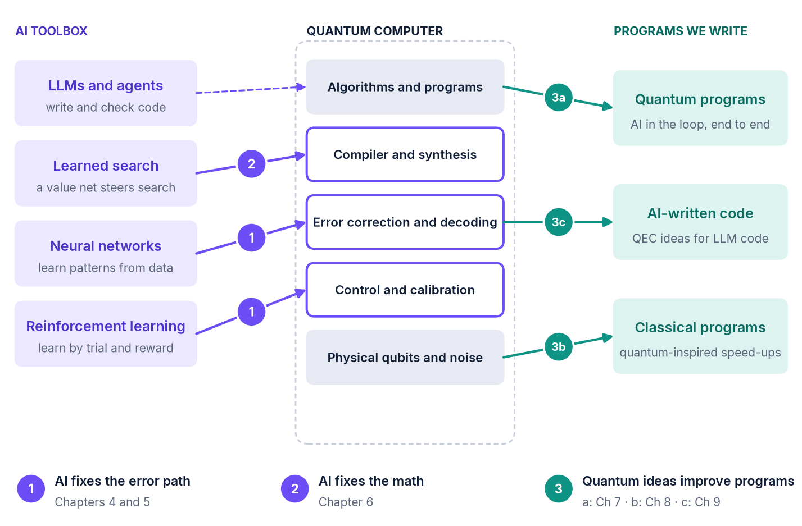

ในบทความนี้
In this post
เริ่มที่โจทย์ — เราจะปรับปรุงอะไร
ดาวน์โหลดหนังสือและโค้ดประกอบ
ดาวน์โหลด Below Threshold ฉบับเต็ม (PDF ภาษาอังกฤษ · 104 หน้า · 5.4 MB)
อ่านบน Google Drive · ดาวน์โหลดตัวอย่าง Python ทั้งสิบบท (ZIP)
บทที่ 1/10 · บทเรียนดัดแปลงจาก Below Threshold: AI, Quantum Errors and Better Code ฉบับ 1.0 บทที่ 1 หน้า 5–8
หนังสือ Below Threshold: AI, Quantum Errors and Better Code ถามว่า AI ช่วย quantum computer ได้อย่างไร และ programmer นำบทเรียนกลับมาใช้กับงานประจำวันได้หรือไม่ คำตอบมีหลายทาง แต่แต่ละทางต้องกำหนด input, output และตัววัดให้ชัด บทแรกนี้สร้างแผนที่ก่อนลงรายละเอียด
ใช้พื้นฐาน Python, probability และ vector เล็กน้อย ไม่ต้องมี quantum hardware หรือ API key เมื่ออ่านจบ คุณควรแยกได้ว่าโครงการหนึ่งกำลังลด physical noise ลด logical failure ลดจำนวน gates หรือช่วยเลือกโปรแกรมที่ผ่าน checks ทั้งสี่อย่างส่งผลต่อ reliability แต่เป็นผลลัพธ์คนละระดับ
ลองตั้งโจทย์เหมือนงาน backend: “ลดคำตอบผิดจาก 1 ใน 100 ให้เหลือ 1 ใน 1,000 โดยใช้เวลารวมเท่าเดิม” ชัดกว่า “ใช้ AI ให้ดีขึ้น” เพราะเริ่มวาง baseline และ acceptance criterion ได้ทันที ซีรีส์นี้จะถามเช่นนี้ทุกบท
สามสะพาน — อ่านภาพเป็นสถาปัตยกรรม


สะพานแรก: error path ข้อมูลจาก parity checks เข้าสู่ decoder ซึ่งอนุมานผลของ error ที่เกิดขึ้น AI อาจช่วยเรียนรู้ noise ที่ model แบบง่ายตกหล่น รวมถึงช่วย calibration หรือ mitigation แต่ต้องทดสอบบนข้อมูลที่ไม่ได้ใช้ฝึก
สะพานที่สอง: mathematics ของ circuit compiler หรือ search เลือกการแปลงที่ใช้ gates น้อยลง โดยยังคง operation เดิม เป้าหมายคือผลเทียบเท่ากันด้วยต้นทุนต่ำลง ไม่ใช่เพียงได้ circuit ที่หน้าตาสั้นกว่า บท 6 จะตรวจความเทียบเท่าและเปรียบเทียบกับ baseline
สะพานที่สาม: โปรแกรมที่ดีขึ้น มีทั้ง workflow ใช้ AI เขียน quantum code อัลกอริทึม quantum-inspired ที่รันบน classical hardware และ Syndrome-Driven Development สำหรับคัดเลือกโค้ด AI สะพานนี้นำแนวคิดมาใช้ ไม่ได้ทำให้ Python กลายเป็น quantum computer
Physical กับ logical — กำหนดชั้นของความผิดพลาด
Physical qubit คืออุปกรณ์ที่เกิด noise จริง ส่วน logical qubit คือข้อมูลที่เข้ารหัสร่วมกันในหลาย physical qubits ระบบอ่าน checks ซ้ำและให้ classical decoder ตัดสินใจว่าจะชดเชยอย่างไร เป้าหมายของ QEC คือให้ logical information อยู่รอด แม้บางส่วนของอุปกรณ์จะผิดพลาด
แนวคิด stabilizer ที่ Gottesman อธิบาย ทำให้ checks เปิดเผย error โดยไม่อ่านคำตอบที่เก็บอยู่ ส่วน การทดลอง below-threshold บน Willow แสดงว่าภายใต้เงื่อนไขที่ทดลอง การเพิ่ม code distance ลด logical error ลงได้ คำว่า below threshold จึงบอกความสัมพันธ์ระหว่างขนาด code กับ error ไม่ใช่ error เท่ากับศูนย์
อย่าเอา failure ต่อ gate ต่อ shot และต่อ cycle มาเรียงแข่งกันตรง ๆ และอย่าสับสนว่า memory ที่ดีขึ้นเท่ากับ application ที่ชนะ classical baseline แล้ว ต้องระบุหน่วย งานที่ทำ และเวลาไว้คู่กับทุกตัวเลข
ลงมือ — คำนวณโอกาสสะสม error
ตัวอย่างเว็บนี้เป็น แบบจำลองสมมติเพื่อการสอน ไม่ใช่การจำลอง device หรือ Lab ของหนังสือ สมมติว่ามี N โอกาสเกิด error ที่เป็นอิสระกัน แต่ละโอกาสมี probability p ดังนั้น P(เกิดอย่างน้อยหนึ่งครั้ง) = 1 − (1 − p)N ทั้งนี้ “มี physical error” ยังไม่เท่ากับ “คำตอบผิด” เพราะ error correction หรือโครงสร้างงานอาจทำให้ fault ไม่กระทบผล
"""Illustrative independent-opportunity error budget; not a device model."""
from math import expm1, isclose, log1p
def any_failure(per_operation, operations):
if not 0 <= per_operation < 1 or operations < 0:
raise ValueError("Use 0 <= p < 1 and a nonnegative operation count")
return -expm1(operations * log1p(-per_operation))
scenarios = [
("baseline", 0.001, 1000),
("halve physical error", 0.0005, 1000),
("halve operation count", 0.001, 500),
("hypothetical logical layer", 0.00001, 1000),
]
for label, p, count in scenarios:
print(f"{label:26s} p={p:.5f} N={count:4d} P(any)={any_failure(p, count):.6f}")
assert any_failure(0, 1000) == 0
assert any_failure(0.001, 0) == 0
assert isclose(any_failure(0.1, 2), 0.19)
assert any_failure(0.001, 500) < any_failure(0.001, 1000)
assert any_failure(0.0005, 1000) < any_failure(0.001, 1000)
print("Checks passed: zero-risk cases and monotonic improvements")baseline p=0.00100 N=1000 P(any)=0.632305
halve physical error p=0.00050 N=1000 P(any)=0.393545
halve operation count p=0.00100 N= 500 P(any)=0.393621
hypothetical logical layer p=0.00001 N=1000 P(any)=0.009950
Checks passed: zero-risk cases and monotonic improvementsbaseline มี p = 0.001 จำนวน 1,000 ครั้ง โอกาสมีอย่างน้อยหนึ่ง error ประมาณ 63.23% ลด p ครึ่งหนึ่งเหลือประมาณ 39.35% หรือลดจำนวน operation ครึ่งหนึ่งเหลือประมาณ 39.36% สองทางนี้จึงให้ผลใกล้กันภายใต้สมมติฐานที่ตั้งไว้ ส่วน logical layer สมมติที่ p = 0.00001 เหลือประมาณ 1% ต้องไม่ตีความว่าตัวเลขนี้มาจาก hardware
log1p กับ expm1 ช่วยคำนวณกรณี probability เล็กโดยไม่ลบตัวเลขใกล้หนึ่งโดยตรง ความหมายสำคัญกว่ารูปแบบ implementation: error budget ต้องมีทั้งความถี่ต่อ operation และจำนวนโอกาสที่ error จะเกิด
อ่านผล Labs — แยกหลักฐานให้ถูก
หนังสือมีแปด Labs ตั้งแต่ surface-code threshold และ learned decoder ไปถึง circuit synthesis, simulated bifurcation, tensor-train compression และการคัดเลือกโปรแกรมจาก LLM ผลที่รายงานมาจากโจทย์ code และ environment ที่ระบุในหนังสือ ไม่ใช่การรับประกันผลบนระบบของผู้อ่าน
ใช้ตารางเปรียบเทียบสั้น ๆ ทุกครั้ง: baseline ทำงานเดียวกันหรือไม่ ใช้ shot หรือ compute budget เท่ากันหรือไม่ มี training cost เท่าไร ข้อมูล test ถูกกันออกจริงหรือไม่ และความต่างเกิน sampling uncertainty หรือไม่ ความแม่นยำที่สูงขึ้นแต่ช้าจนสะสม backlog อาจใช้ใน real-time decoder ไม่ได้
ในซีรีส์นี้ ภาพผลทดลองจะระบุว่าเป็นผลที่หนังสือรายงาน ส่วน Python ขนาดเล็กเป็นตัวอย่างใหม่ที่รันเพื่อตรวจแนวคิด แยกหลักฐานสองระดับนี้ก่อนตัดสินใจเลือก library หรือวาง production architecture
แบบฝึก — เขียน contract ก่อนเลือก AI
แก้ scenarios ให้มีการปรับ p และ N พร้อมกัน แล้วตรวจว่าเมื่อ p คงเดิมแต่ N เพิ่ม probability ต้องไม่ลดลง และเมื่อ N คงเดิมแต่ p ลด probability ต้องไม่เพิ่ม หากผลผิด invariant ให้แก้ implementation ก่อนอภิปรายผลของ AI
จากนั้นเลือกปัญหาจริงหนึ่งเรื่อง เขียน input, output, baseline, budget และ acceptance criterion อย่างละประโยค จัดเข้าหนึ่งในสามสะพาน แล้วเขียนหลักฐานที่ยังขาดหนึ่งข้อ หาก fault มี correlation สูตรในบทนี้ยังใช้ตรง ๆ ไม่ได้ ให้ระบุข้อจำกัดนั้นใน contract ด้วย บทถัดไปจะดูว่า quantum error มีหน้าตาอย่างไร ก่อนสร้าง checks ในบท 3
Run & check — รันตัวอย่างด้วยตัวเอง
ตัวอย่างสำหรับสอนนี้ใช้ Python standard library เท่านั้น บันทึก ch01.py แล้วรันด้วย Python 3.10 ขึ้นไป โดย assertions ตรวจ invariant ที่อธิบายในบท
python3 ch01.pyตัวอย่างทั้งสิบบทและผลลัพธ์ที่คาดหวัง (ZIP) · อ่าน source บน GitHub
Sources & scope — แหล่งอ้างอิงและขอบเขต
เอกสารและหลักฐาน
โครงบท ภาพที่ให้เครดิต และผล lab ที่รายงานมาจากหนังสือของผู้เขียน ณ November 2026 ตัวอย่างสั้นที่ใช้ standard library รันเพื่อตรวจบทเรียนเว็บวันที่ 25 November 2026 เป็นแบบจำลองเพื่อสอน ไม่ได้รันซ้ำการทดลอง Stim, neural network, mitigation หรือ LLM ฉบับเต็มในหนังสือ ข้ออ้าง hardware, simulator, preprint และบริษัทคงขอบเขตตามที่ระบุ
- Anirach Mingkhwan. Below Threshold: AI, Quantum Errors and Better Code. Edition 1.0 (November 2026), Chapter 1, pp. 5–8.
- Gottesman. Stabilizer Codes and Quantum Error Correction (1997).
- Google Quantum AI and collaborators. Quantum error correction below the surface code threshold (online 2024; Nature 2025).
Start with a problem you can measure
Download the book and examples
Download the complete Below Threshold book (English PDF · 104 pages · 5.4 MB)
Read on Google Drive · Download all ten Python examples (ZIP)
Chapter 1/10. A tutorial adaptation of Below Threshold: AI, Quantum Errors and Better Code, Edition 1.0, Chapter 1, pp. 5–8.
Below Threshold: AI, Quantum Errors and Better Code asks how AI can help a quantum computer, and what programmers can carry back into everyday software. There are several answers. Each needs a defined input, output and measurement. This opening lesson builds a map before asking you to implement a decoder or train a model.
You need Python, elementary probability and a little vector intuition. You do not need quantum hardware or an API key. By the end, you should distinguish reducing physical noise, reducing logical failure, reducing gate count, and selecting a program that passes checks. All affect reliability, but they measure different layers.
Frame the objective as you would a backend change: “reduce wrong answers from one in a hundred to one in a thousand at the same total latency.” That gives you a baseline and an acceptance criterion. “Make it better with AI” does not yet specify an experiment.
Read the three bridges as an architecture
Bridge one is the error path. Parity-check data enters a decoder that infers the logical effect of errors. Learning can capture noise statistics omitted by a simple model. AI can also help calibration or mitigation. The validation question is whether the improvement survives on data excluded from training.
Bridge two is circuit mathematics. A compiler or search procedure finds a cheaper implementation of the same operation. Fewer gates can reduce error opportunities, but equivalence must be checked. Chapter 6 compares synthesis methods against both a practical baseline and a small exact optimum.
Bridge three returns to programs. It includes an AI-assisted quantum workflow, quantum-inspired methods running on classical hardware, and the book’s Syndrome-Driven Development proposal for AI-written software. Borrowing these ideas changes how you design and validate a program; it does not turn Python into a quantum processor.
Physical faults and logical failures need different metrics
A physical qubit is a noisy device. A logical qubit is information encoded across several devices. Repeated checks and a classical decoder protect that information. The goal of error correction is that the logical information survives even when some physical components fail.
The stabilizer formalism gives checks that reveal errors without revealing the stored answer. The Willow below-threshold experiment demonstrates logical error suppression as code distance increases under its experimental conditions. Below threshold describes this scaling behaviour. It does not mean that the memory has become error-free.
Keep the denominator attached to the number: failure per gate, per shot and per cycle are different metrics. A better quantum memory also does not establish an application advantage over a classical baseline. Specify the unit, task and elapsed time before comparing results.
Run a small independent-error budget
This new web example is an illustrative teaching model, not a device simulation or a rerun of a book lab. Assume N independent error opportunities, each with probability p. Then P(at least one error) = 1 − (1 − p)N. A physical fault is not automatically a wrong final answer: correction and application structure can prevent it from reaching the output.
"""Illustrative independent-opportunity error budget; not a device model."""
from math import expm1, isclose, log1p
def any_failure(per_operation, operations):
if not 0 <= per_operation < 1 or operations < 0:
raise ValueError("Use 0 <= p < 1 and a nonnegative operation count")
return -expm1(operations * log1p(-per_operation))
scenarios = [
("baseline", 0.001, 1000),
("halve physical error", 0.0005, 1000),
("halve operation count", 0.001, 500),
("hypothetical logical layer", 0.00001, 1000),
]
for label, p, count in scenarios:
print(f"{label:26s} p={p:.5f} N={count:4d} P(any)={any_failure(p, count):.6f}")
assert any_failure(0, 1000) == 0
assert any_failure(0.001, 0) == 0
assert isclose(any_failure(0.1, 2), 0.19)
assert any_failure(0.001, 500) < any_failure(0.001, 1000)
assert any_failure(0.0005, 1000) < any_failure(0.001, 1000)
print("Checks passed: zero-risk cases and monotonic improvements")baseline p=0.00100 N=1000 P(any)=0.632305
halve physical error p=0.00050 N=1000 P(any)=0.393545
halve operation count p=0.00100 N= 500 P(any)=0.393621
hypothetical logical layer p=0.00001 N=1000 P(any)=0.009950
Checks passed: zero-risk cases and monotonic improvementsAt p = 0.001 over 1,000 opportunities, the chance of at least one fault is about 63.23%. Halving p gives about 39.35%; halving the count gives about 39.36%. These two interventions look similar only under the stated assumptions. The hypothetical logical layer reaches about 1%; that number is an input to our illustration, not a hardware result.
log1p and expm1 improve numerical behaviour for small probabilities. The engineering point is simpler than the implementation: an error budget needs both a rate per opportunity and the number of opportunities.
Read the labs as bounded evidence
The book’s eight labs range from surface-code thresholds and learned decoding to circuit synthesis, simulated bifurcation, tensor-train compression and LLM-program selection. Their recorded results belong to the specified problems, implementations and environments. They are not guarantees for a reader’s workload.
Ask the same comparison questions every time. Does the baseline solve the same task? Are shot and compute budgets equal? What did training cost? Was test data withheld? Is the difference larger than sampling uncertainty? An accurate decoder that accumulates an ever-growing backlog may still miss the system requirement.
This series labels the book’s experimental plots as recorded book results. Its small Python examples are newly executed teaching models. Keep those two levels of evidence separate when choosing a library or designing a production system.
Exercise: write a contract before choosing AI
Change scenarios to improve p and N together. Check two invariants: increasing N at fixed p cannot reduce the probability, and decreasing p at fixed N cannot increase it. Repair the implementation before interpreting an apparent AI improvement if either invariant fails.
Then choose one real problem. Write one sentence each for its input, output, baseline, budget and acceptance criterion. Place it on one of the three bridges and name one missing piece of evidence. If faults are correlated, our formula no longer applies directly; record that limitation in the contract. Next we examine what quantum errors actually look like before building checks in Chapter 3.
Run and check the example
This complete teaching example uses only the Python standard library. Save ch01.py, then run it with Python 3.10 or later. Its assertions check the stated invariants.
python3 ch01.pyAll ten examples and expected output (ZIP) · Browse example source on GitHub
Sources and scope
Reading and evidence
The author’s book is the source of the chapter structure, credited diagrams and reported lab results (November 2026 snapshot). The short standard-library example above was executed for this web lesson on 25 November 2026. It is a teaching model; the book’s full Stim, neural-network, mitigation and LLM experiments were not rerun for these posts. Hardware, simulator, preprint and company claims retain their stated scope.
- Anirach Mingkhwan. Below Threshold: AI, Quantum Errors and Better Code. Edition 1.0 (November 2026), Chapter 1, pp. 5–8.
- Gottesman. Stabilizer Codes and Quantum Error Correction (1997).
- Google Quantum AI and collaborators. Quantum error correction below the surface code threshold (online 2024; Nature 2025).